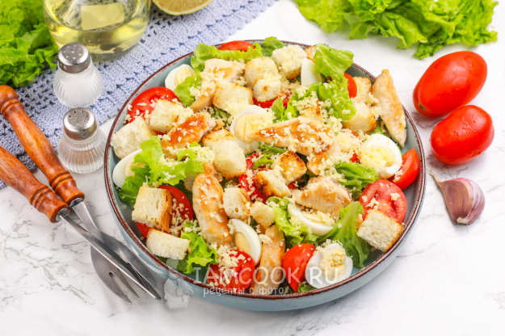

Салат Цезарь

Описание
Один из рецептов салата Цезарь - с курицей, помидорами и яйцами - не для заправки, а просто отварными. Ярче и сытнее. Но обязательно салат с сухариками. И масляная заправка для салата Цезарь с чесноком и лимонным соком.
- Курица
- Сыр Пармезан
- Салат Айсберг
- Батон белый
- Помидоры черри
- Яйца
- Соус Цезарь
- Соль, перец по вкусу
Шаги
- Куриное филе нарезать и обжарить на разогретой сковороде с оливковым маслом до легкой румяности (около 10 минут). Можно немного отойти от классики и отварить куриное филе в подсоленной воде до мягкости (20-25 минут), а затем нарезать кусочками или разделить руками на полоски.
- Батон (желательно без корки) нарезать кубиками и подсушить в духовке (минут 15-20 при температуре 170-180 градусов). Или обжарить на сухой сковороде до румяности, помешивая.
- Заправка: перемешать измельченный/выдавленный чеснок, горчицу, соль, перец, оливковое масло, добавить лимонный сок (можно добавить чайную ложку майонеза, но и без него заправка хороша).
- Разрезать помидорки черри пополам. Яйца отварить вкрутую и крупно нарезать. Салатные листья вымыть, обсушить, порвать руками на кусочки и выложить на тарелку. (Орехи, если используете, порубить - лучше подсушенные в духовке или на сковороде.)
- Добавить к салатным листьям курицу, полить заправкой. Можно перемешать с заправкой только салатные листья, а затем сверху выложить кусочки курицы.
- Добавить в салат помидоры, яйца, натереть сверху сыр, добавить гренки. Салат сразу же подавать к столу.
Home